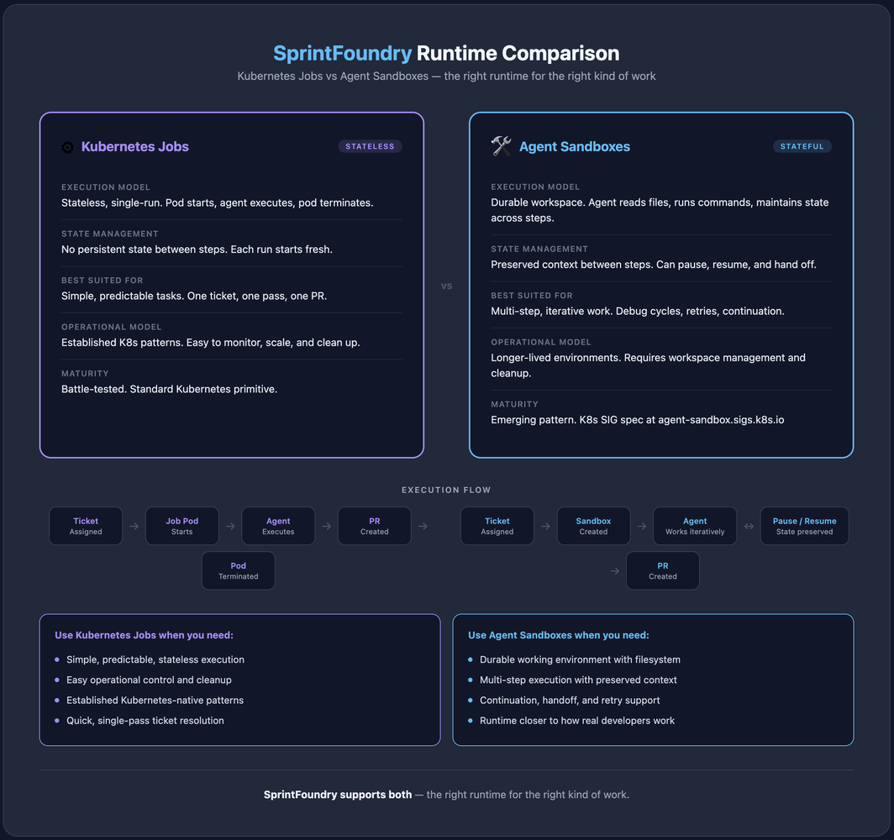

SprintFoundry now supports Agent Sandboxes
Most people think the hard part of AI agents is the model.
I don’t.
The hard part is giving the agent a real place to work.
That’s why I’m excited to share that SprintFoundry now supports Agent Sandboxes.
An agent sandbox is an isolated environment where an agent can actually do work: read files, run commands, make changes, debug issues, and keep its working state across multiple steps.
In simple terms, it’s the difference between asking an agent to think about the task vs giving it a proper workspace to execute the task.
Why this matters:
Real engineering work is not one prompt and one reply. It’s iterative. It needs files, tools, state, retries, and continuation.
Without the right runtime, agents stay stuck in demo mode.
That said, we are not replacing Kubernetes Jobs.

We are supporting both Kubernetes Jobs and Agent Sandboxes because both matter.
Kubernetes Jobs are still a great fit when you want:
- simple, predictable, stateless execution
- easy operational control
- established Kubernetes-native patterns
Agent Sandboxes are better when you want:
- a more durable working environment
- multi-step execution with preserved context
- better support for continuation and handoff
- a runtime that feels closer to how real developers work
We made the decision to support both because the future is rarely one model only.
Some workflows need the simplicity and maturity of Jobs. Others need the flexibility and continuity of Sandboxes.
SprintFoundry should support the right runtime for the right kind of work.
That’s the bigger idea here:
The future of AI agents will not be won only by better models. It will be won by better runtimes.
Still early. But this is a big step toward making SprintFoundry useful for real software delivery, not just agent demos.
More on Agent Sandboxes: https://agent-sandbox.sigs.k8s.io/
#SprintFoundry #AIAgents #Kubernetes #PlatformEngineering #DevTools #CloudNative
Originally published on LinkedIn.